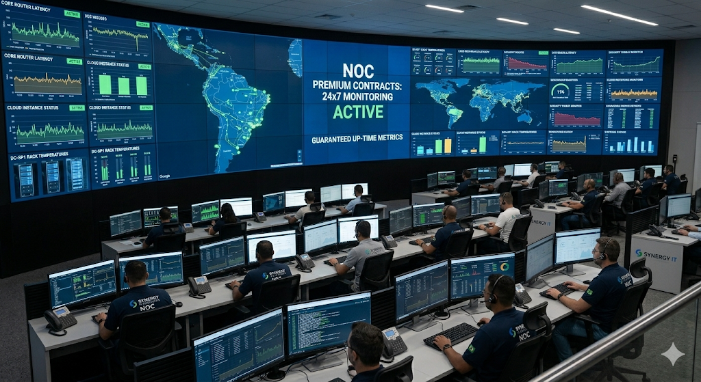
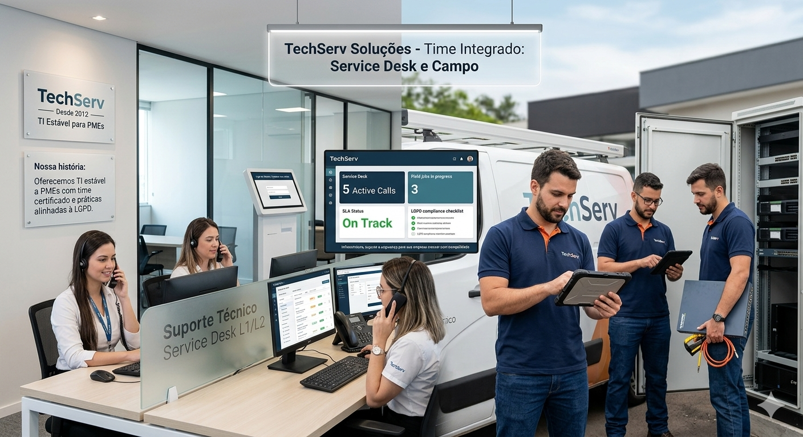
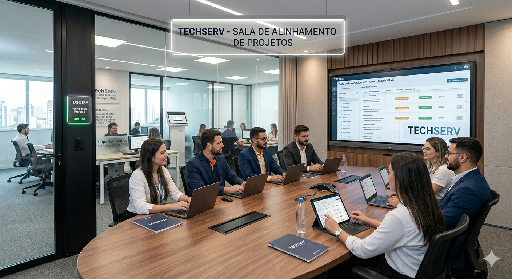
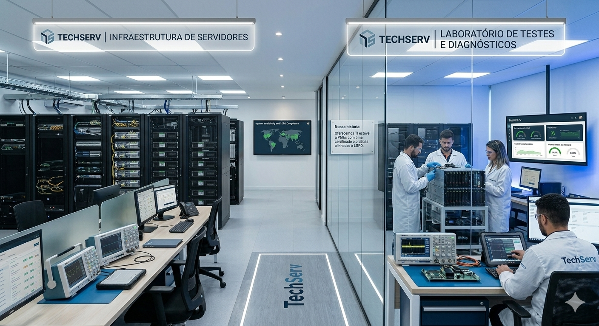

Outsourcing de TI, projetos e suporte para empresas que precisam de estabilidade, segurança e
previsibilidade de custos.
Nossa história
A TechServ Soluções foi fundada em 2012 em Recife, com foco em
outsourcing de TI e projetos sob medida para PMEs dos setores de serviços, varejo e
indústria leve. Começamos com suporte presencial e remoto e evoluímos para contratos com SLA,
central de atendimento e entregas em nuvem (Microsoft 365, backup e infraestrutura híbrida).
Hoje mantemos equipe própria de campo e NOC, parcerias com fabricantes e integradores, e processos
inspirados em ITIL e boas práticas de segurança. Tratamos dados pessoais com base legal,
minimização e rastreabilidade, em linha com a LGPD.
Cada contrato passa por diagnóstico, proposta com escopo e investimento detalhados e plano de
transição. Clientes cadastrados acessam o portal para abrir solicitações e
acompanhar serviços; demais contatos ficam no rodapé desta página.
Vídeo institucional
Trecho em streaming (YouTube, cerca de 1 minuto) sobre
infraestrutura crítica e operações em data center — contexto alinhado às frentes de
projeto, continuidade e segurança que a TechServ oferece aos clientes.
Dica: ao abrir o site como arquivo no computador (file://), o YouTube
às vezes mostra “Erro 153”. Use a extensão
Live Server no VS Code/Cursor (endereço http://localhost) ou clique na
capa para tentar carregar o player. Alternativa:
abrir no YouTube.
Estrutura e operação

Centro de operações (NOC): monitoração de links, serviços críticos e filas de incidente em contratos
com disponibilidade estendida.

Service desk e equipe de campo integrados: padronização de estações, visitas programadas e
registro em ferramenta de chamados.

Salas de reunião para kickoff de projetos, comitês de mudança e alinhamento de indicadores com
patrocinadores do cliente.

Laboratório e staging para testes antes de produção: validação de imagens, patches e alterações de
configuração.
Serviços
Ofertas com escopo fechado ou contrato mensal, sempre com documentação de entrega,
responsáveis definidos e canais formais de comunicação. Atendemos desde a operação do dia a dia até
projetos de modernização e conformidade.
Service desk
Suporte e service desk
Primeiro nível com classificação de incidente e requisição, escalonamento técnico e comunicação
formal ao negócio.
Filas por criticidade, metas de SLA e relatório mensal de volume e tempo de resolução
Registro obrigatório em ITSM com histórico e anexos
Base de conhecimento, procedimentos padronizados e handover entre turnos
Infraestrutura
Redes e conectividade
Projeto, implantação e suporte evolutivo de LAN, WLAN e acesso remoto, com documentação as-built.
Dimensionamento de Wi-Fi corporativo, VLANs, QoS e alta disponibilidade de link
Firewall de próxima geração, VPN site-to-site e acesso remoto com MFA
Análise de gargalos, atualização de firmware e plano de continuidade de conectividade
Continuidade
Nuvem, backup e recuperação
Proteção de dados e cargas de trabalho em ambiente híbrido, com comprovação periódica de restore.
Migração e operação em nuvem pública (IaaS/SaaS) com governança de custos
Política 3-2-1, retenção por política interna e testes de restauração documentados
Conciliação de licenças, capacidade e renovações com visão de TCO anual
Governança
Segurança da informação e LGPD
Controles técnicos e organizacionais para reduzir risco operacional e apoiar adequação à privacidade.
Baseline de hardening em estações Windows/Linux, servidores e perimetros
Antispam, MFA, gestão de privilégios e revisão periódica de contas
Suporte a auditorias, inventário de tratamentos e contratos com suboperadores
Direção e fundadores
Foto
Cargo
Nome
Breve CV
Diretora de Operações
Ana Paula Mendes
Mais de 15 anos liderando operações de infraestrutura e telecom; ITIL Foundation, CCNA; ex-coordenadora
de NOC em operadora nacional; responsável por SLAs e continuidade na TechServ desde 2014.
Diretor Comercial e Projetos
Ricardo Lopes
MBA em gestão; histórico em implantação de ERP, Microsoft 365 e integrações em PMEs; condução de
escopo, cronograma e comitês de mudança; interface comercial e de entrega de projetos na TechServ.
Diretor de Segurança
Felipe A. Nogueira
Especialização em hardening e resposta a incidentes; experiência em SOC e treinamento de equipes;
define políticas de segurança, revisão de acessos e apoio à conformidade (LGPD) na TechServ.
.png)
.png)
.png)